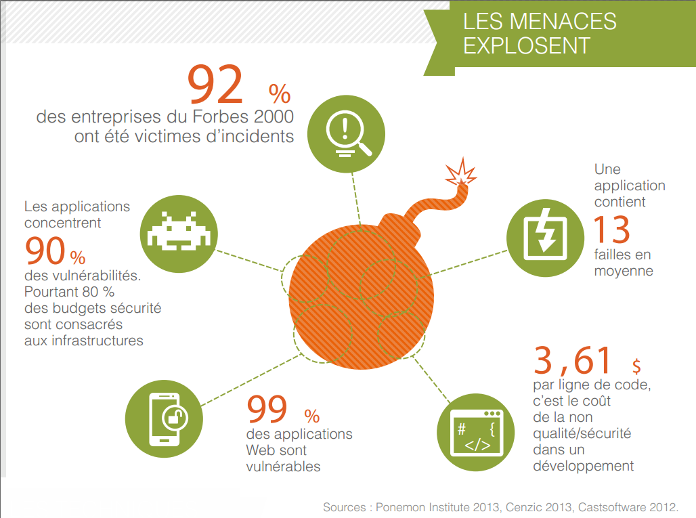

Sensibilisation aux vulnérabilités applicatives Web
Les vulnérabilités
sont issues de faiblesses d'implémentation
à différents niveaux
- choix d'architecture (infrastructure ou logicielle)
- non implémentation d'un DMZ et donc exposition de serveurs sensibles
- configuration des serveurs (OS, applicatif)
- système non patché, installation par défaut avec des droits trop permissifs
-
développement logiciel
- ce qui nous intéresse, détails à suivre...
Quelques chiffres anxiogènes...

Les conséquences
de l'exploitation des vulnérabilités
L'exploitation d'une faiblesse de développement, de configuration, d'infrastructure, peut mener à :
- Une fuite de données
- notamment personnelles comme les mots de passe, qui font régulièrement les choux gras de la presse spécialisée, mais aussi de plus en plus de la presse grand public, ce qui conduit directement à...
- Une atteinte à l'image
- la reprise sur les réseaux sociaux de failles de sécurité, avérées ou non, le défaçage (defacement), le relai d'une fausse information (ex: piratage de comptes Twitter de Reuters ou d'Associated Press qui a fait plonger le DJ)
- Une interruption de service
- attaque ciblée par déni de service (DoS et par extension DDoS), blocage de comptes utilisateurs suite à attaque par brute force, qui entraine une coupure de service et donc une perte directe du chiffre d'affaire
Quelques malheureux exemples récents
Know your enemy
Pour éviter les vulnérabilités, il faut tout d'abord les connaitre
Il existe des référentiels qui font l'unanimité :
OWASP
- Open Web Application Security Project
- Un organisme indépendant, acceptant toute contribution, mais qui n'est lié à aucun éditeur de solution
- Qui produit et met à disposition toute sorte de ressources
- une base documentaire riche et régulièrement mise à jour
- des fiches synthétiques sur les principales failles de sécurité (top 10 en anglais ou en français)
- des exemples de code sécurisé, des framework pour se prémunir des attaques (ex: ESAPI)
- des outils d'intrusion pour tester le degré de vulnérabilité de son système (ex: ZAP Proxy)
- ...
Les bons réflexes
Les contrôles sur lesquels doit se concentrer tout développeur : OWASP Proactive Controls
Les 3 principales vulnérabilité à connaitre :
- Cross site Scripting (XSS) : injection sur le navigateur client, persistente ou non
- Injections : SQL Injection, Command Injection, LDAP Injection...
- Cross Site Request Forgery (CSRF) : manipulation de la session d'un utilisateur à l'insu de son plein gré
Un mini-site sur ces 3 vulnérabilités
All input is evil
S'il ne fallait retenir qu'une règle, c'est celle de ne jamais faire confiance aux sources externes, à commencer par les entrées utilisateur.
La bonne pratique consiste soit à :
- filtrer pour n'accepter que l'attendu (de préférence en liste blanche, attention aux expressions rationnelles...)
- encoder pour éviter toute injection (SQL injection, XSS, ...)
Ne pas réinventer la roue, des framework de filtrage/encodage existent (ESAPI par ex.)
Recommandations pour les applications Web
En plus des guides de l'OWASP, des bonnes pratiques existent pour gérer la sécurité des applications Web
- Utiliser des framework dédiés à la sécurité (il est trop dangereux et coûteux de chercher à réinventer la roue)Exemple : Spring Security
- Transférer et Stocker les données sensibles de manière sécurisée (securing data at rest / in transit)Exemple : HTTPS, "stockage" des mots de passe selon un algorithme de hashage sécurisé (bcrypt, scrypt, ...)
- Tracer (et si possible analyser les traces...)Exemple : centraliser les logs avec Syslog, Logstash, ...
Page wiki : recommandation pour la sécurité des applications Web
Pour résumer
- Connaitre les vulnérabilités pour pouvoir s'en protéger (référentiel OWASP), être curieux des techniques d'attaque et pourquoi pas se mettre dans la peau d'un pirate...
- Avoir une position défensive sur toute donnée en entrée du système, particulièrement celle fournie par le navigateur (formulaire, paramètre d'URL, fichier...), se poser la question "comment pourrais-je contourner le bon fonctionnement de mon application ?"
- Utiliser des framework/bibliothèque sécurité, ne pas réinventer la roue
Merci pour votre attention !
Questions / Réponses selon le temps qui nous reste...